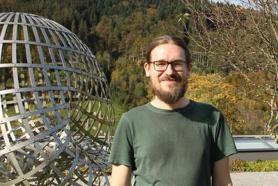

Home

I am a Førsteamanuensis (Associate Professor) at University of Oslo, in the Algebra, Topology and Geometry section.
Previously, I did my PhD in Bonn with Peter Teichner, and a postdoc in Münster with Thomas Nikolaus. During those times, I also got to spend some time in Berkeley, Heidelberg and at the IAS.
In my research, I am interested in a wide array of things from stable homotopy theory, including algebraic K-theory, THH and TC and equivariant homotopy theory.
Contact: achimkr@math.uio.no